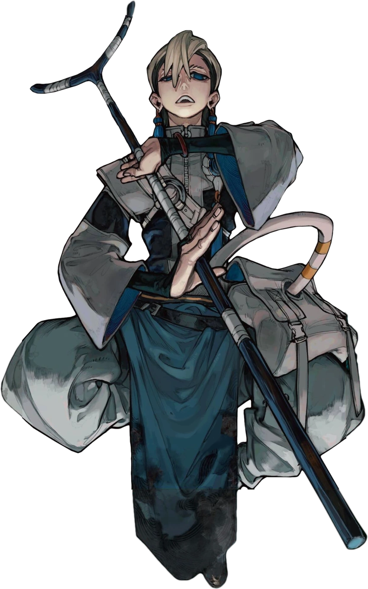

Zanka

who is Zanka?
Zanka was born into the prestigious Nijiku Family and was expected to become a Hell Guard like his older sister and brother. To fulfill this expectation, he enrolled in the Central Hell Guard Training Academy in the Kamuatari District as a trainee, where he quickly rose to the top of his class. However, his dominance was short-lived when another trainee, Hyo, joined[7] and surpassed his abilities. Zanka realized that he couldn’t hope to compare to a genius like her.[8] Disheartened, Zanka ran away and met Enjin, who inspired him to become a Cleaner and become strong enough to surpass geniuses.[9][10]
Zanka appearance:
Zanka is a tall, slender teenager with dark brown hair slicked back into a mullet and accented with blond streaks that complement his piercing navy blue eyes. His unique look is further defined by his eyebrows, which are shaved into a pattern resembling three distinct lines, and his pierced ears, from which hang long, dangling tassel piercings.
His power:
Overall Abilities: Zanka proves to be a formidable combatant, displaying high speed, strength, and agility in his fighting style. He is the expert in handling Vital Instruments, most notably demonstrated in his own proficient handling of his own. Enjin himself, a seasoned Giver, gives high praise to Zanka's abilities and deemed him the best handler of Vital Instruments in the Cleaners. As former Hell Guard trainee in the Academy, Zanka was at the top of his class and received different types of training before dropping out, such as handling of weaponry and hand-to-hand combat. Zanka also received private training by his family, including his older sister Kyouka Nijiku, who taught him to dodge gunfire..
Zanka mbti:ISTJ
Age: 17
.gif) |
|for more info about zanka
Visit fandom.com/wiki/zanka_Nijiku